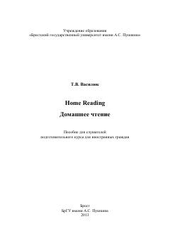

HRIngliz tilini o'rganuvchilar uchun hikoyalar va leksik mashqlardan iborat o'quv qo'llanma.
Ushbu o'quv qo'llanma ingliz tilini o'rganayotgan xorijlik talabalar uchun mo'ljallangan bo'lib, mashhur ingliz tilidagi hikoyalar va ularga oid leksik mashqlarni o'z ichiga oladi. Kitob matnni tushunish va so'zlashuv ko'nikmalarini rivojlantirishga qaratilgan ikki qismdan iborat.